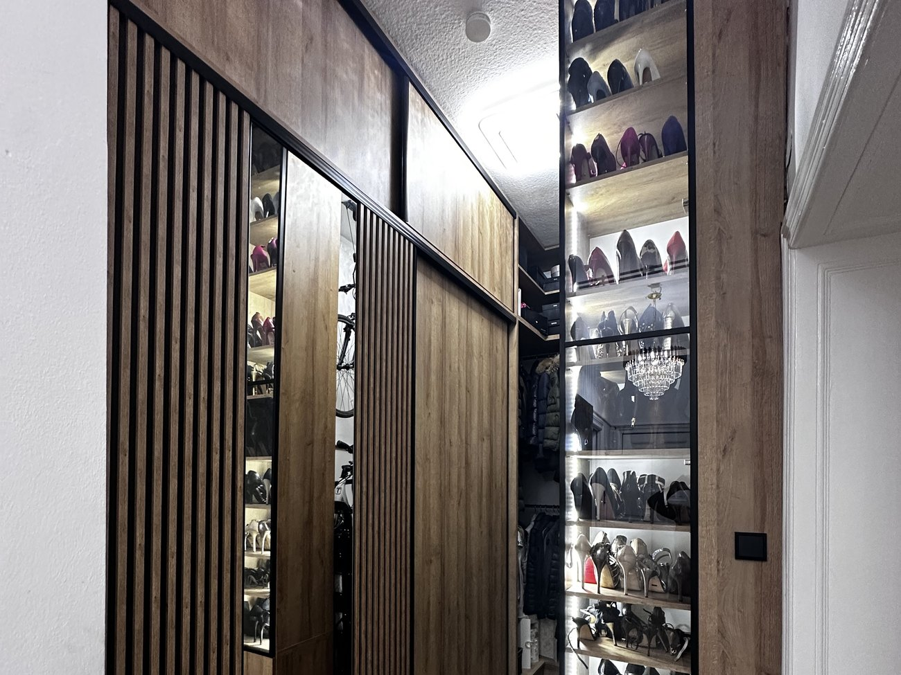

Wszystko powstaje pod konkretne pomieszczenie. Jeśli ściana jest krzywa albo pod skosem, mebel dostaje taki kształt, żeby przylegał.

Od pojedynczej zabudowy po kuchnię z wyspą otwartą na salon. Sprzęt chowamy w słupkach, blat docinamy pod wymiar pomieszczenia.
Szafa do sufitu zamiast wolnostojącej, garderoba w osobnym pomieszczeniu albo we wnęce. Środek układamy pod to, co w niej stanie.


Miejsca, w których gotowe meble zwykle nie pasują. Tu wymiar robi różnicę między szafą a szafą z zapasem miejsca.
Mebel dostajesz najpierw na rysunku. Można na nim przesunąć szufladę, zmienić kolor frontu albo wysokość słupka, zanim cokolwiek pójdzie na maszynę.
Ściany, skosy, wnęki, gniazdka i rury. Wszystko z miarką na miejscu, nie z planu mieszkania.
Widzisz mebel w swoim pomieszczeniu, z kolorami frontów i układem szuflad.
Cena przychodzi razem z projektem, z rozpisanymi elementami.
Zmiany wprowadzamy na rysunku. Produkcja rusza dopiero po Twoim „tak".
Zadzwoń i opisz, co chcesz zmienić. Pomiar i projekt ustalamy przy pierwszej rozmowie.